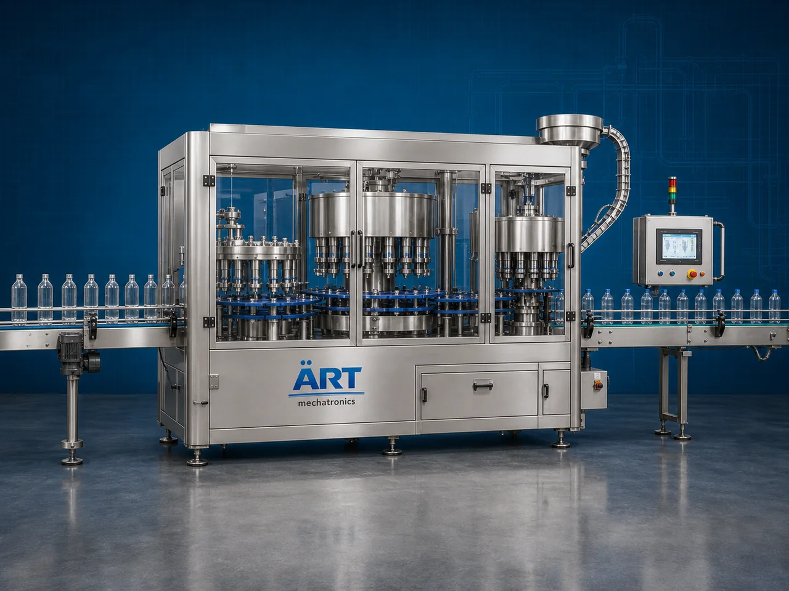

Bottle Packaging Machine (Automatic PET, Glass & Spray Bottle Packaging System)
A Bottle Packaging Machine, also known as a Bottle Filling Machine, Bottle Packing Machine, Beverage Bottle Packaging System, or Automatic Bottle Filling & Sealing Machine, is an advanced industrial packaging solution designed for automatic bottle feeding, rinsing, filling, capping, sealing, labeling, coding, and high-speed packaging operations for PET bottles, glass bottles, spray bottles, beverage bottles, perfume bottles, cosmetic bottles, pharmaceutical bottles, and FMCG packaging applications.

About the Bottle Packing
Bottle packaging systems are widely used for:
- Water bottle packaging
- Juice bottle filling
- Soft drink bottle packaging
- Perfume bottle filling
- Spray bottle packaging
- Beverage bottle sealing
- Cosmetic bottle packaging
- Retail liquid product packaging
The machine improves:
- Filling accuracy
- Product hygiene
- Leak-proof sealing quality
- Shelf life protection
- Production efficiency
- Packaging consistency
- Retail presentation quality
Industrial bottle packaging machines use:
- Automatic bottle feeding systems
- Servo synchronized filling systems
- PLC and HMI automation controls
- Precision liquid dosing mechanisms
- Capping, sealing, and labeling systems
to automatically fill and package bottles with superior packaging quality and high production efficiency.
Bottle packaging machines are widely used in industries such as:
Beverage industries Water bottling industries Perfume industries Cosmetic industries Pharmaceutical industries Food processing industries Chemical industries FMCG industries
where hygienic packaging, accurate liquid filling, and premium retail presentation are essential.
The machine is highly suitable for:
- Water bottle filling
- Juice bottle packaging
- Soft drink bottling
- Perfume bottle filling
- Spray bottle packaging
- Cosmetic liquid packaging
ART Mechatronics offers high-performance bottle packaging machines, engineered for continuous industrial operation, hygienic liquid packaging performance, accurate filling quality, and reliable long-term packaging automation.
Working Principle of Bottle Packaging Machine
- 1. Empty Bottle Feeding Empty bottles are automatically fed into packaging line through synchronized conveyor systems.
- 2. Bottle Rinsing & Cleaning Process Machine automatically rinses and cleans bottles before filling operation.
Servo synchronization ensures smooth bottle handling and hygienic processing.
- 3. Bottle Filling Operation Machine handles: ✔ Water ✔ Juice ✔ Soft drinks ✔ Perfumes ✔ Syrups ✔ Liquid chemicals ✔ Cosmetic liquids
accurately and continuously.
- 4. Bottle Capping & Sealing Process Machine performs: Cap placement Screw capping ROPP capping Spray pump fitting Leak-proof sealing
for hygienic and secure packaging quality.
- 5. Labeling & Inspection Integration Optional systems include: Wraparound labeling Shrink sleeve labeling Batch coding Date printing Vision inspection systems
- 6. Finished Bottle Discharge Finished bottles discharged automatically for: Cartoning Case packing Retail distribution Export shipment handling
Types of Bottle Packaging Machines
- 1. Water Bottle Packaging Machine Designed for: ✔ Mineral water and packaged drinking water bottling applications
- 2. Juice & Beverage Bottle Filling Machine Suitable for: ✔ Juice, soft drink, and beverage packaging systems
- 3. Perfume Bottle Packaging Machine Uses: ✔ Perfume and fragrance liquid packaging systems
- 4. Spray Bottle Filling Machine Designed for: ✔ Spray pump bottle and cosmetic liquid packaging systems
- 5. Servo Driven Bottle Packaging Machine Suitable for: ✔ Precision high-speed liquid filling operations
- 6. Fully Automatic Bottle Packaging System Designed for: ✔ Complete industrial bottling and packaging automation lines
Industries Using Bottle Packaging Machines
🥤 Beverage Industry Juices, soft drinks, flavored beverages, and bottled drink packaging systems. 💧 Water Bottling Industry Mineral water, packaged drinking water, and purified water bottling systems. 🧴 Cosmetic & Perfume Industry Perfumes, body sprays, lotions, and cosmetic liquid bottle packaging systems. 💊 Pharmaceutical Industry Syrups, liquid medicines, and healthcare bottle packaging systems. 🍅 Food Processing Industry Sauces, oils, syrups, and liquid food bottle packaging systems. 🛒 FMCG Industry Consumer liquid products and premium retail bottle packaging systems.
Features & Advantages
- High-speed automatic bottle filling and packaging operation
- Accurate liquid dosing and synchronized filling systems
- Hygienic and leak-proof packaging quality
- PLC and servo automation control systems
- Improves product freshness and shelf life
- Reduces product wastage and labor dependency
- Supports multiple bottle sizes and liquid viscosities
- Reliable long-term industrial performance
- Smooth and continuous packaging operation
Technical Highlights
Machine Type: Automatic bottle packaging machine Industrial bottle filling system Liquid packaging machine Packaging Material: PET bottles Glass bottles Spray bottles Plastic liquid containers Filling Integration: Gravity filling systems Piston filling systems Servo dosing systems Volumetric filling systems Features: PLC control system Servo synchronization Touchscreen HMI Automatic bottle rinsing Automatic capping systems Applications: Water Juices Soft drinks Perfumes Syrups Liquid chemicals Automation: Semi-automatic Fully automatic industrial systems
Turnkey Bottle Packaging Solutions
ART Mechatronics offers: Complete bottle packaging systems Automatic liquid filling solutions Packaging automation integration systems Conveyor synchronization systems Installation & commissioning After-sales service & AMC
Why Choose Art Mechatronics
Expertise in industrial packaging and automation systems Customized bottle packaging solutions for multiple industries High-performance and hygienic liquid packaging technology Advanced PLC and servo automation systems Proven industrial packaging performance across sectors
Applications
Beverage Manufacturing Plants Water Bottling Industries Perfume Manufacturing Facilities Cosmetic Packaging Units Food Processing Industries FMCG Packaging Plants
Get pricing & specs for the Bottle Packing
Share the product, target capacity, current process and plant location. These details help our engineers discuss the right machine or line configuration.
One partner, from design to start-up
ART Mechatronics designs, manufactures, installs and commissions your Bottle Packing solution with regional presence in India, UAE and Thailand.